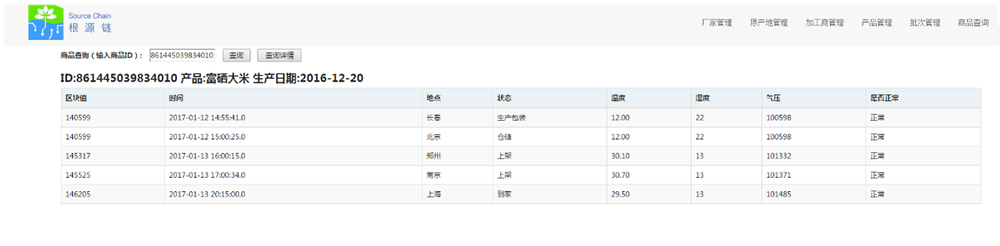

铅笔道访谈 ‖ 创始人为什么要花自个的钱办国家的事
发布时间：2017/04/21 热门推荐 浏览次数：399

◆ WeShare链创始人卡隆
►导语
提起自己的创业团队，卡隆觉得“还挺有意思”：因为成员是30岁以上的中青年人，全都有孩子。因此创业时也觉得志同道合，“做了一件未来对孩子有益处的事情”。
去年8月，卡隆成立“WeShare链”，将其定位于区块链系统、平台的技术服务和运营商。得益于区块链利用时间戳、分布式存储、传输、加密等特性，项目先从学校场景切入，为校园提供食品安全解决方案。
具体来说，WeShare链为生态系统内流通的食品设置食品安全电子档案，向学校（或食品生产企业）开放管理权限并建设食品安全风险预警系统(检测、预警、追溯、应急)；在食品流通过程中，引入食品安全检测环节，并将检测数据实时记录在区块链分布式网络数据库中。一旦某一环节出现问题，即可追溯查证。
目前，项目正寻求融资。
注:卡隆承诺文中数据无误，为其真实性负责，铅笔道已备份录音速记，为内容客观性背书。
[ 寻找食品安全的答案 ]
“您能给我个答案吗？”接触食品安全行业以来，卡隆总是被问到这一问题。
4年前，他承办过全国青少年儿童食品安全知识竞赛，常常与监管机构、学校还有食品企业打交道。
而最大的困惑来自于家长。他们知道食品安全问题所在：农药残留、激素超标、含有抗生素……但没有问题的食品在哪里呢？
为了寻找“答案”，卡隆跑去东北，租下几千亩地种植富硒大米。两年多时间内，大米也曾走进学校市场，但由于土地的产出很难有几何级变化，体量起不来，也就不能解决更多人的痛点。
其实，在他看来，好的“答案”有很多。“只是它们可能不为大家所了解和接受，或者食品品质没有监控和溯源。”
结合食品溯源市场，卡隆联想到此前做金融时接触到的区块链。后者利用时间戳、分布式存储、传输、加密等特性，如果与农业种植、食品安全结合起来，正好可以解决很多问题。
比如利用区块链监测蔬菜的生长时间。蔬菜大棚中一般装有摄像头，只要把图像数据上传到链上，数据即不可更改和消除。蔬菜必须长满一个成熟期才能被采摘，这就保证了其生长期可控。
在大市场内，他想选定一些特定的细分领域，先行实验。有多年学校食品安全经验的卡隆，首先选择了学校作为切入场景。
去年8月，卡隆担任了第一届中国区块链产业链大会的总策划。在区块链+农业分论坛上，他邀请了农业部、质检总局、农科院、中粮等专业领域的专家，与他们探讨了食品安全的溯源问题。
他认为应该先做校园食品安全的解决方案。因为学校和种植场所两端固定，他要做的就是如何把数据透明、公开化，且不参与交易环节。
想法得到专家认可后，卡隆组建团队成立“WeShare链”，并将其定位于区块链系统、平台的技术服务和运营商。
[ 追根溯源 ]
团队分工上，卡隆负责顶层设计及数据采集方案，CTO王立仁负责整体的技术解决方案。加之北邮、北理几位导师作为技术合伙人，“研发成本还是比较低的”。

◆ WeShare链CTO王立仁
而技术解决方案包括三个层面：一是区块链，即“WeShare链”的分布式账本系统；二是数据采集（食品基本信息、智慧农业数据、物联网智能传感设备采集），包括后台管理方案；三是应用层，比如面向个人用户的App。
至春节前，区块链系统的开发已经完成。团队带着传感器在全国各地采集数据，并储存在区块链上，“都没问题”。
随后，卡隆着手推进区块链的记账单位。第一家意向单位是黑龙江省资源厅，从团队远赴当地汇报到最后签约，只花费一周时间。紧接着，国家地理信息测绘局、关心下一代工作委员会也成为WeShare链的记账单位。
至于学校方面，团队目前正与几个学校讨论解决方案：了解他们需要哪些数据，有哪些供货商，供货商要提供什么数据。“数据仅仅是数据本身，没有具体需求，也没有太大意义。”

◆ 测试数据
与区块链身份认证安全相结合，团队计划为一个品种，如大米、西红柿、鸡蛋等做一次溯源。无论是用二维码还是电子线圈，最终实现“一品一传感器，一品一码”。
基于此，食品从生产加工、仓储运输、销售等环节的过程数据，都可以被记录保存在区块链上。一旦某一环节出现问题，通过这些数据即可实现追责。
因为技术团队还只开发出一套基本的后台管理系统，对于卡隆而言，当前最需打磨的是根据不同食品品种定制具体的解决方案。
此外，项目还与“快乐的蛋”等11家食品生产企业签约，为其提供食品溯源系统。
运营四个月以来，WeShare链已有营收约30万元，区块链系统的应用层（包括面向C端用户的“真否”App）预计于今年8月上线。项目有三种盈利方式：学校缴纳的平台使用费；供应商、生产企业的硬件使用费，以及未来企业使用区块链时向记账单位购买积分。
今年，团队想先在北京发展100所学校。“最起码学校要做到1000所，再来考虑复制的问题。”
等到第二阶段，他才考虑在行业中拓展，即打造大特产品牌。比如五常大米、赣南脐橙等特产，利用溯源系统确定了每年的固定产量后，价格会上涨，有利于农民增收，也在一定程度上减少了假货的流通。“相当于‘限量版’的概念。”
当然，对卡隆来说，他更看重的是区块链和数据。“只要链条本身运转起来，那它的价值是无限的。”
原文链接:http://mt.sohu.com/it/d20170421/135422465_649045.shtml
来源：铅笔道 记者 赵芳馨